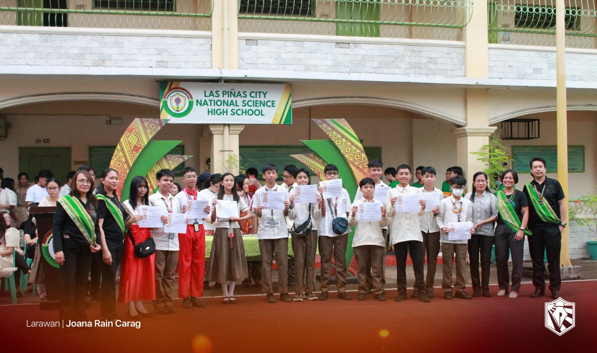
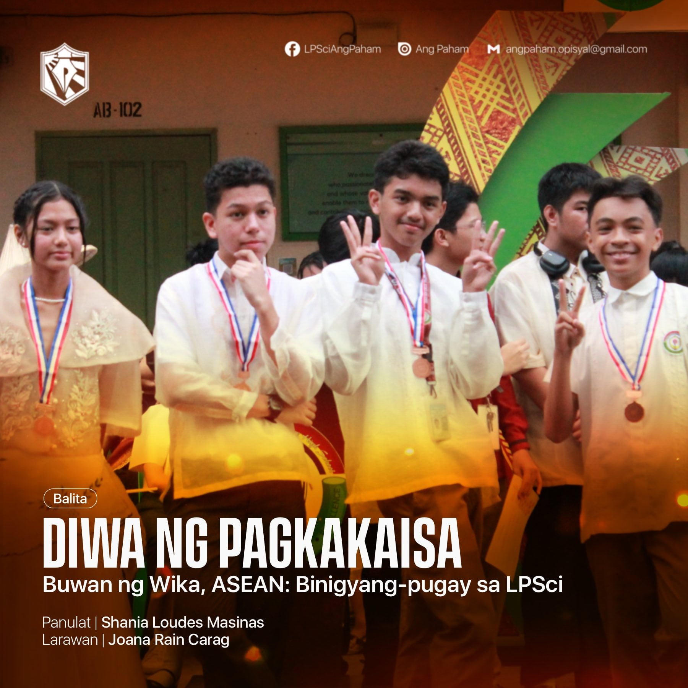

Reflection on Buwan ng Wika!
What is the most important thing I learned from the event?
During the celebration of Buwan ng Wika, I was reminded of how rich and unique our Filipino culture truly is. Wearing traditional attire during the flag ceremony helped me appreciate our heritage more deeply and made me proud to be Filipino. I also realized the importance of preserving our language and traditions, especially in a time when many people prefer to use foreign languages. This event reminded me that our identity as Filipinos is something to be honored and celebrated.
How can I apply what I learned in real-life situations?
I can apply what I learned by making an effort to use and improve my Tagalog more often, especially when communicating with others. Even though English is my first language, I now understand that speaking in Filipino shows respect for my culture and helps me connect better with my fellow Filipinos. In real life, this means practicing using Filipino in daily conversations, school activities, and even in writing.
Did I actively participate in the event? How?
Yes, I actively participated in the Buwan ng Wika celebration. I participated in activities that helped me practice and express myself in Tagalog, such as declamation reading and other classroom activities. These experiences allowed me to step out of my comfort zone and appreciate the beauty of our national language. It was both challenging and rewarding to use Tagalog more confidently.
If I were to teach this topic or subject to a classmate, how would I explain it?
If I were to explain the importance of Buwan ng Wika to a classmate, I would tell them that it is a celebration of who we are as Filipinos. It helps us remember the value of our language, traditions, and culture. I would encourage them to participate actively and to be proud of speaking Filipino because it is part of our identity.
Why is it important to have events like this?
Events like Buwan ng Wika are important because they strengthen our love for the country and help us appreciate our roots. They remind us that being Filipino is something to be proud of, and that our language and traditions must be preserved for future generations. These celebrations unite students, promote cultural awareness, and encourage everyone to value the beauty of our national identity.

